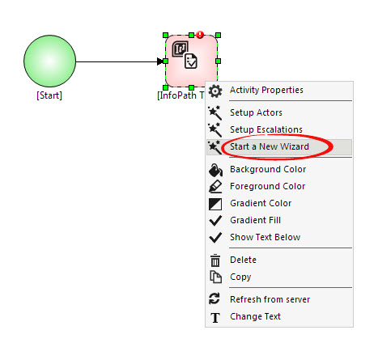

No
AVEVA Work Tasks comes with significant improvements in terms of user-friendliness in designing the workflow. A totally new Visio-like user-interface for the Process Designer allows users to drag and drop activities and link them by dragging and dropping links. In addition to the normal method of property setting, there is an Expression Editor to create expressions for specifying the values of activity properties. Besides these, the new version of AVEVA Work Tasks comes with Wizards, which present a third mode of property setting. The Wizards are intuitive and guide the user through the different steps involved in setting key properties. There are two property wizards - Actors Selection Wizard and Escalation Email Wizard - that can be used to set the different properties related to each.
Accessing the Wizards
You can access the wizards to set the corresponding properties by right-clicking on the property icon in the Designer and selecting the appropriate wizard option in the menu. These options are only displayed in the right-click menu of the activities that have wizards.
